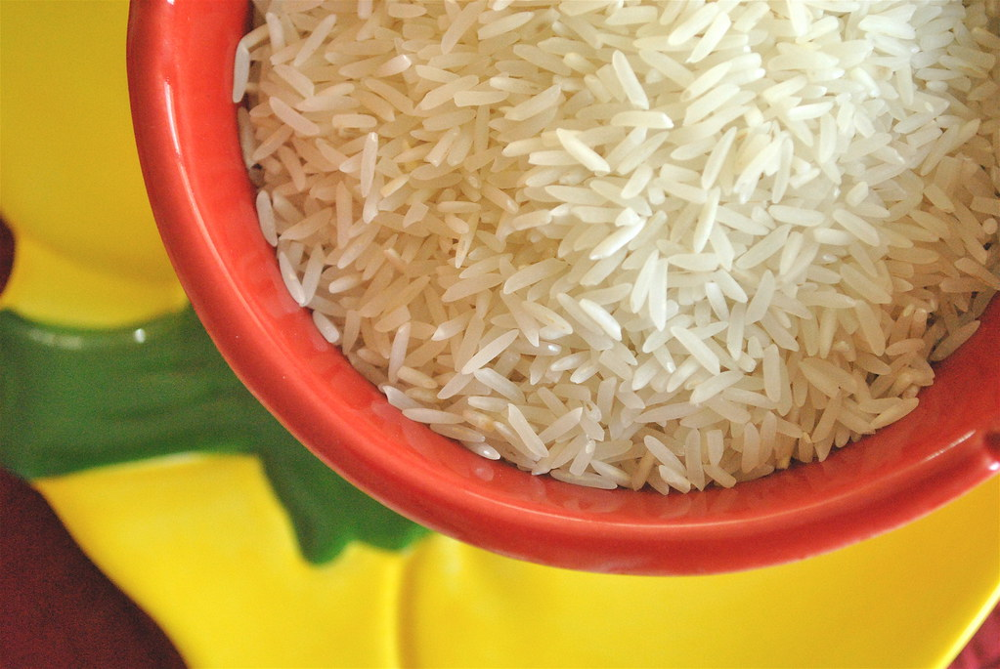
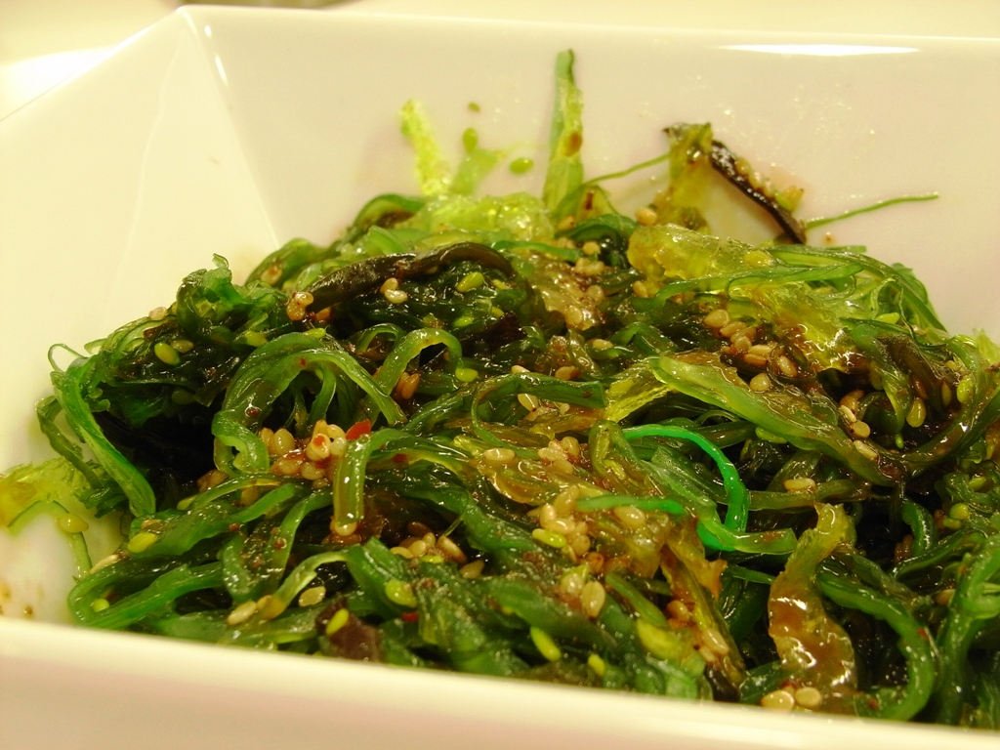
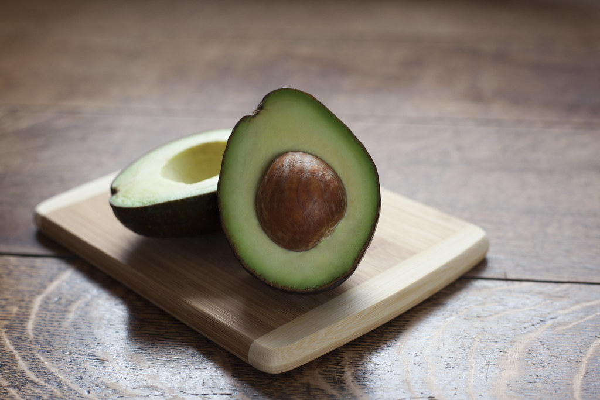
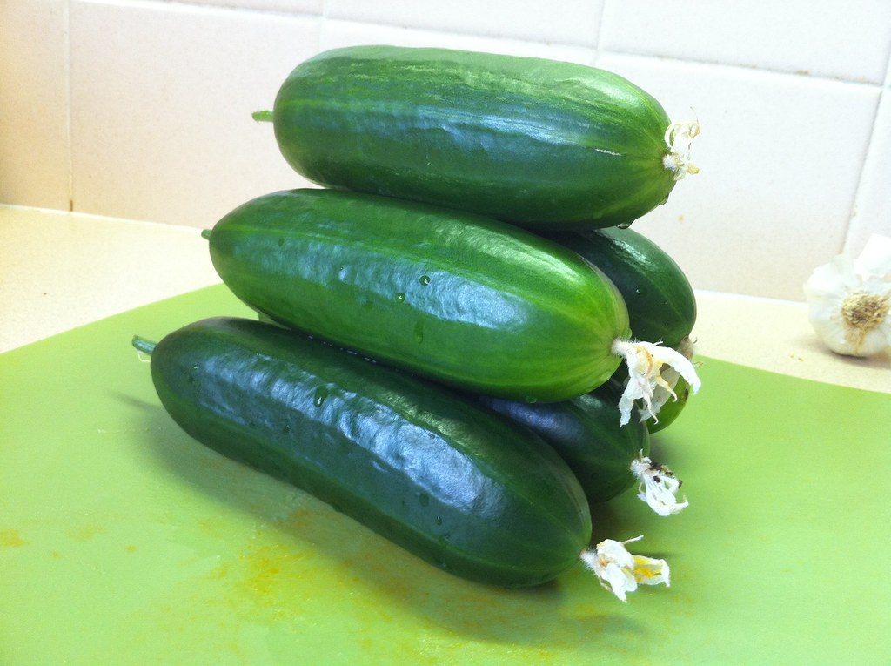

RECETA 1
|  «Basmati Rice» por cookbookman17 está bajo la licencia CC BY 2.0 |
 «Ensalada de Algas» por jlastras está bajo la licencia CC BY 2.0 |
 «Avocado on board» por Kjokkenutstyr.net está bajo la licencia CC BY-SA 2.0 |
 «Pimientos | 121023-0429-jikatu» por jikatu está bajo la licencia CC BY-SA 2.0 |
INGREDIENTES.
|
ELABORACIÓN.
|
Sitio web de las receta: Poke Bowl.

DELIFOOD by Noa Vázquez is licensed under a Creative Commons Reconocimiento-NoComercial-CompartirIgual 4.0 Internacional License.